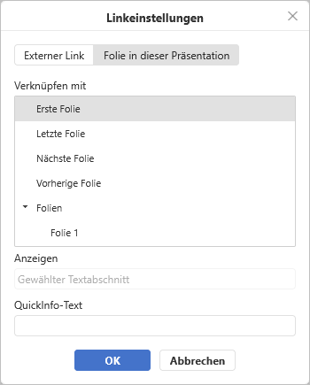

Link einfügen
Um einen Link im Präsentationseditor hinzuzufügen,
- Wählen Sie das Objekt aus, das Sie als Link anzeigen möchten, z. B. einen Textausschnitt, ein Bild oder eine Gruppe von Objekten.
- Wechseln Sie in der oberen Symbolleiste auf die Registerkarte Einfügen.
- Klicken Sie auf das Symbol Link in der oberen Symbolleiste.
-
Das Fenster Linkeinstellungen wird angezeigt, in dem Sie die Link-Parameter festlegen können:
-
Wählen Sie den Linktyp, den Sie einfügen möchten:
-
Verwenden Sie die Option Externer Link und geben Sie eine URL im Format
http://www.example.comin das Feld Verknüpfen mit unten ein, wenn Sie einen Link hinzufügen möchten, der zu einer externen Website führt. Wenn Sie einen Link zu einer lokalen Datei hinzufügen müssen, geben Sie die URL im FormatDatei://Pfad/Präsentation.pptx(für Windows) oderDatei:///Pfad/Präsentation.pptx(für macOS und Linux) in das Feld Verknüpfen mit unten ein.Der Link
Datei://Pfad/Präsentation.pptxoderDatei:///Pfad/Präsentation.pptxkann nur in der Desktop-Version des Editors geöffnet werden. Im Web-Editor können Sie den Link nur hinzufügen, ohne ihn öffnen zu können.
-
Wenn Sie einen Link hinzufügen möchten, der zu einer bestimmten Folie in der aktuellen Präsentation führt, wählen Sie die Option Folie aus dieser Präsentation und geben Sie die gewünschte Folie an. Die folgenden Optionen stehen Ihnen zur Verfügung: Nächste Folie, Vorherige Folie, Erste Folie, Letze Folie, Folie.

-
Verwenden Sie die Option Externer Link und geben Sie eine URL im Format
- Angezeigter Text — geben Sie einen Text ein, der klickbar wird und zu der im oberen Feld angegebenen Webadresse/Folie führt.
- QuickInfo — geben Sie einen Text ein, der in einem kleinen Dialogfenster angezeigt wird und den Nutzer über den Inhalt des Verweises informiert.
-
Wählen Sie den Linktyp, den Sie einfügen möchten:
- Klicken Sie auf OK.
Zum Einfügen eines Links können Sie alternativ auch die Tastenkombination Strg+K verwenden oder mit der rechten Maustaste an die Stelle klicken, an der ein Link eingefügt werden soll, und im Rechtsklickmenü die Option Link auswählen.
Es ist auch möglich, ein Zeichen, ein Wort oder eine Wortkombination mit der Maus oder über die Tastatur auszuwählen und dann wie oben beschrieben das Fenster Linkeinstellungen zu öffnen. In diesem Fall wird das Feld Angezeigter Text mit dem von Ihnen ausgewählten Textfragment gefüllt.
Bewegen Sie den Mauszeiger über den hinzugefügten Link, um den QuickInfo anzuzeigen, der den von Ihnen angegebenen Text enthält. Sie können dem Link folgen, indem Sie die STRG-Taste drücken und in Ihrer Präsentation auf den Link klicken.
Um den hinzugefügten Link zu bearbeiten oder zu löschen, klicken Sie mit der rechten Maustaste darauf, wählen Sie im Rechtsklickmenü die Option Link und dann die Aktion, die Sie ausführen möchten – Link bearbeiten oder Link entfernen.